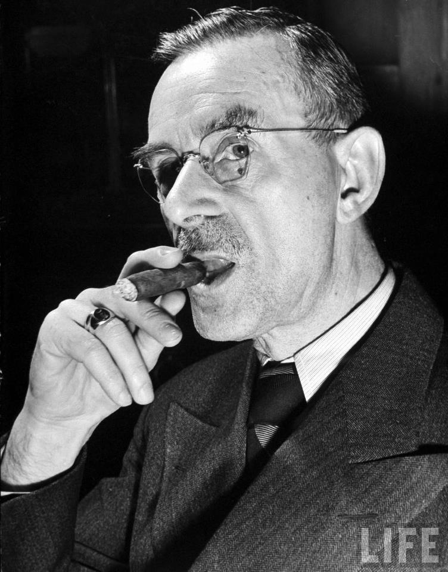

Today
Heavy smoker: Thomas Mann
Heavy smoker: Thomas Mann
German author Thomas Mann
Paul Thomas Mann 6 June 1875 – 12 August 1955) was a German novelist, short story writer, social critic, philanthropist, essayist, and the 1929 Nobel Prize in Literature laureate. His highly symbolic and ironic epic novels and novellas are noted for their insight into the psychology of the artist and the intellectual. His analysis and critique of the European and German soul used modernized German and Biblical stories, as well as the ideas of Goethe, Nietzsche and Schopenhauer.
Pensive: Pope Francis
Victims outraged over pope's praise of handling of clergy sex abuse
ap. Pope Francis praised American bishops Wednesday for their "generous commitment'" to helping victims of clergy sex abuse, drawing an angry rebuke from advocates who said the bishops acted only under the threat of hundreds of lawsuits. Addressing church leaders in a prayer service at the Washington cathedral, Francis said they had faced the crisis "without fear of self-criticism and at the cost of mortification and great sacrifice."